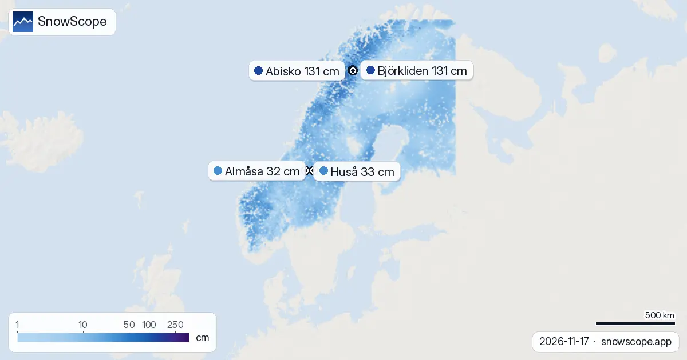

Snö i Sverige i dag: snödjup och nysnö, 17 november 2026
I Sverige är omkring 258 540 km² snötäckt i dag (tisdag 17 november). Ytan är nästan densamma som i går.
Se snöprognosen för Björkliden live i SnowScope-appenSnödjup, pudervarningar och 3D-kartan, gratis.
Snötäcket i dag
Snön ligger ända ner till låglandet och kusten. För en vecka sedan var det 119 070 km², så snötäcket har vuxit med 139 470 km².
| Skidort | Snödjup | Nysnö, 72 h | På väg, kommande dagar | Topp |
|---|---|---|---|---|
| Björkliden | 131 cm | 4 cm | 11 cm | 933 m |
| Abisko | 131 cm | 4 cm | 10 cm | 902 m |
| Huså | 33 cm | 3 cm | 5 cm | 677 m |
| Almåsa | 32 cm | 1 cm | 6 cm | 702 m |
| Högfjället | 29 cm | 1 cm | 9 cm | 886 m |

Snödjup efter höjd
Snödjupet beror på höjden: 0–500 m: i snitt 8 cm (72 % snötäckt); 500–1 000 m: i snitt 14 cm (100 % snötäckt); 1 000–1 500 m: i snitt 42 cm (100 % snötäckt); 1 500–2 000 m: i snitt 67 cm (100 % snötäckt).
Var nysnön föll
Under tre dygn föll mest nysnö här: Hemavanfjällen, Lapplandsfjällen och Jämtlandsfjällen (upp till 7 cm).
Vad det betyder i backen
Den vita ytan växer, och håller kylan i sig kan fler liftar öppna.
Med mer snö i prognosen bör de närmaste dagarna bli bättre.
De bästa skidorterna nu
Mest snö i de övre backarna: Björkliden, 131 cm.
Därefter: Abisko (131 cm), Huså (33 cm), Almåsa (32 cm) och Högfjället (29 cm).
Björkliden: 4 cm nysnö på tre dagar och upp till 11 cm till före fredag, 20 november.
De närmaste dagarna
Prognos för nysnö: upp till 15 cm på tre dagar och upp till 17 cm på sju dagar.
Den snörikaste dagen: onsdag, 18 november, upp till 11 cm.
Tips för skidåkare
- Kolla att liftarna går innan du åker.
- Tidigt på säsongen är snön tunn över stenarna: håll dig i preparerade backar.
Om siffrorna
Snödjupen för skidorterna är det djupaste snötäcket på ortens övre backar enligt SnowScopes snömodell (cirka 1 km, körning från 17 november); de är uppskattningar för ett område, inte en mätning på en punkt. Stationsvärden är mätningar på det angivna datumet. Prognoser kan ändras. Läs alltid den officiella lavinprognosen innan du åker offpist.
Citera den här rapporten
För forskning, undervisning eller press: siffrorna och diagrammen får återanvändas fritt under CC BY 4.0 med den här källhänvisningen.
SnowScope (2026), Snö i Sverige i dag: snödjup och nysnö, 17 november 2026, https://snowscope.app/blog/sv/2026/11/sweden-snow-report-17-november-2026.html, hämtad 2026-11-17
SnowScope (Atlas Labs). (2026, November 17). Snö i Sverige i dag: snödjup och nysnö, 17 november 2026. SnowScope snow reports. https://snowscope.app/blog/sv/2026/11/sweden-snow-report-17-november-2026.html
BibTeX
@misc{snowscope2026swedensnowreport17novemb,
author = {{SnowScope (Atlas Labs)}},
title = {Snö i Sverige i dag: snödjup och nysnö, 17 november 2026},
year = {2026},
month = nov,
howpublished = {\url{https://snowscope.app/blog/sv/2026/11/sweden-snow-report-17-november-2026.html}},
note = {Published 2026-11-17 12:53 UTC; accessed 2026-11-17}
}· CC BY 4.0 · Metoder, data och verktyg →
Björkliden: snö och temperatur efter höjd, i vinter jämfört med förra (verktyg) →
Följ Björkliden
Gratis: ett meddelande när nysnö är på väg, och prognosen varje morgon.